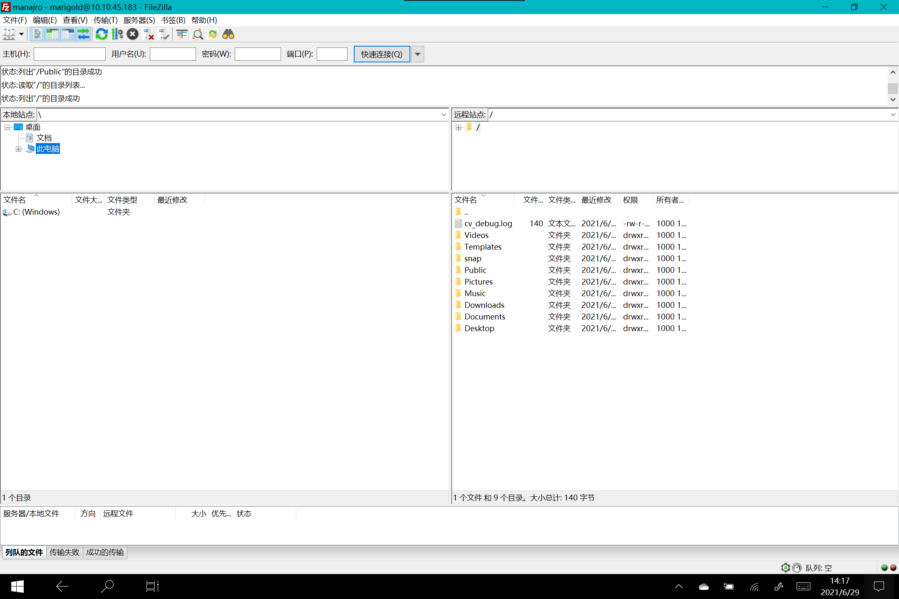

linux开启ftp服务器，并配合客户端filezilla实现文件传输
下载vsftpd
1 | sudo pacman -S vsftpd |
打开配置文件，设置如下：1
2
3
4
5
6
7
8
9
10
11
12
13
14anonymous_enable=NO
local_enable=YES
write_enable=YES
allow_writeable_chroot=YES
local_umask=022
dirmessage_enable=YES
xferlog_enable=YES
connect_from_port_20=YES
chroot_local_user=YES
chroot_list_enable=NO(禁止访问home以上的区域)
listen=YES
pam_service_name=vsftpd
seccomp_sandbox=NO
isolate_network=NO
最后重启服务1
sudo systemctl restart vsftpd
windows下载filezilla，新建站点，输入ip，用户名密码，连接即可，愉快的拖文件吧
可以看到我们只能访问用户目录，进不了root区，进去也是一片问号啥也看不了，再也不用U盘拷过来拷过去，手机文件用kdeconnect，kde桌面自带的和西欧
